Schnelle Tutorials
Tritt herunter
Wireds:
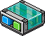
WIRED Effekt: Möbel bewegen und drehen
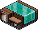
WIRED Auslöser: Habbo tritt von einem Gegenstand herunter
Möbel:
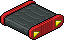
Habbo Roller
Allgemein:
Das Tritt-herunter Wired wird nicht so häufig verwendet wie z. B. das Tritt-auf Wired, aber es lassen sich damit spezielle Dinge einstellen. Für manche Rollerparkoure kann der Auslöser sehr interessant sein. Roller haben ein paar Bugs (= Programmfehler), einer der bekanntesten im Habbo Hotel ist der Rollerbeam. Diesen kann man als Hindernis in einem Parkour ausnutzen.
Einstellung:
Der Auslöser Tritt-herunter fixiert den Roller.
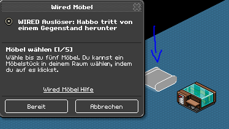
Möbel wählen auf welches herunter getreten werden soll
Im bewegen und drehen Wired wird der Leuchtball ausgewählt. Die Richtung der Bewegung ist entgegengesetzt der Rollerrichtung.
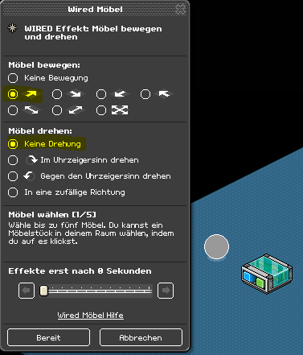
Möbel das sich bewegen oder drehen soll wird ausgewählt
Aktuell bedeutet die Einstellung folgendes: Wenn jemand vom Roller herunter tritt, wird der Leuchtball auf dem Roller bewegt. Das ganze wird wie im Gif aufgebaut.
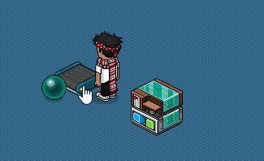
Rollerbeam durch Möbel
Im Gif ist außerdem zu sehen, dass beim Heruntergehen der Habbo gebeamt wurde. Der Beam entsteht, wenn ein Habbo vom Roller herunter tritt und sofort danach jemand oder etwas auf den Roller kommt. Der Roller muss am besten kurz vor dem Abrollen sein, dann wird der, der heruntergetreten war zum Roller "teleportiert" und vom Roller abrollen statt des Möbels oder Habbos, der danach drauf kommt. Im folgenden Gif wird gezeigt, wie der Rollerbeam aussieht, wenn er durch einen anderen Habbo verursacht wird.
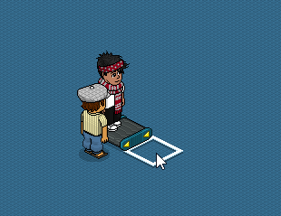
Rollerbeam durch Habbo
In einem Rollerparkour kann man sich also entscheiden, ob man Möbel oder Bots verwendet. Für den Parkour stellen wir noch ein, dass man teleportiert wird, wenn man erfolgreich gebeamt wurde. Das Gif zeigt die Einstellung:
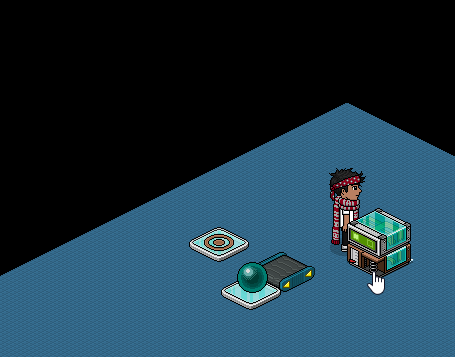
Teleport-Einstellung
So sieht das ganze aus, wenn der Habbo es nicht durch geschafft hat:
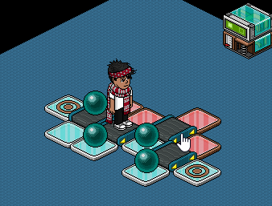
Hindernis nicht überwunden
Und so, wenn er den Parkour meistert:
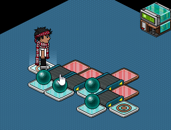
Hindernis überwunden
Wie man sieht kann durch richtiges Klicken zum richtigen Zeitpunkt dem Beamen "ausgewichen" werden, um so diesen Parkour zu meistern. Hier findest du auf der Habview-Seite ein Gif das zeigt wie man den Rollerbeam erst gar nicht aufkommen lässt.
Mehr über den Rollerbeam erfährst du auf der Habbolando-Seite, klicke dafür hier.
Man kann mit diesem Wissen ganz kreative Rollerparkoure bauen und muss sich natürlich nicht an dieses Muster halten. Z. B. kann man ein Hindernis bauen, das nur über Rollerbeam zu überqueren ist. Es lohnt sich dafür verschiedene Einstellungen auszuprobieren, um rauszufinden wann der Rollerbeam schwierig zu erreichen ist.
Habbo Beta/Unity:
Hast du gewusst?
Es kann eingestellt werden, dass ein Habbo ein Effekt auslöst, wenn er in einer bestimmten Richtung von einem Möbel herunter tritt. Das Gif soll zeigen was gemeint ist:
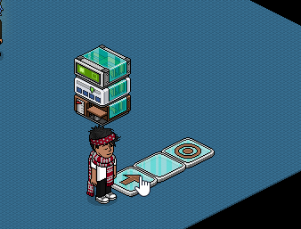
Die Bedingung "Auslösender Habbo steht auf Möbelstück" bestimmt worauf der Habbo sein muss, damit er teleportiert wird
Nur, wenn der Habbo in die Pfeilrichtung von der Pfeilplatte herunter tritt wird er teleportiert, ansonsten nicht. Diese Einstellung ist nützlich für Bereiche, die beim Hinlaufen ein Effekt auslösen sollen aber beim Zurücklaufen nicht mehr. Hier ein Praxisbeispiel:
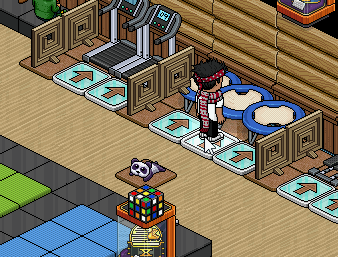
Beim Hinlaufen wird man zu den AFK-LvL-Apparaturen teleportiert, um rauszukommen kann man einfach zurücklaufen und wird nicht teleportiert
Hier findest du ein sehr gutes Tutorial über diese Einstellung von juancha23!!
Kommentare wurden im Zuge der Migration entfernt. Diskussion findet inzwischen im Discord der easyWIRED-Community statt.